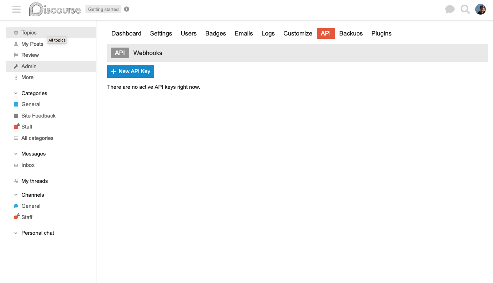

KinesinLMS
KinesinLMS is a simple open-source Learning Management System (LMS) built with the sole developer (or small team) in mind.
It uses Django and tries hard to make it easy for you to understand how things are set up quickly and get the system going with minimal fuss, while remaining free to extend the app in novel ways. That's the intention, at least.
Key features are:
- Simple: "Just enough" LMS to get you started on creating something interesting and engaging. It's not a full-featured LMS, but has the basics you'll need as a starting point.
- Grokkable: A primary focus of KinesinLMS is to fit entirely inside one developer's head. It tries hard to avoid complex frameworks and dependencies, to stick with convention, and to keep the codebase small and understandable.
- Forgettable: For those dependencies and infrastructure components that are necessary, KinesinLMS tries to use basic, boring, tried-and-true dependencies. Boostrap for styling, only one postgres database, etc. When you forget how a dependency or component works, it should be easy to look up and remember.
These docs are an attempt to explain a bit about the architecture of the system, how to set it up and run it, and how to use some of the tools it provides, such as the course authoring tool "Composer."
Overview ↵
Introduction
KinesinLMS is a Learning Management System (LMS) designed to be a simple, easy-to-use, and flexible platform for managing and delivering online courses. It's a 'just enough' LMS that you can use as a base for your e-Learning experiments and research projects.
KinesinLMS is built on the Django web framework and uses standard open-source tools and libraries wherever possible:
- PostgresSQL for the database.
- Bootstrap for styles.
- Django Rest Framework for the API.
- Celery for asynchronous tasks.
...and so on.
For more complex things like badges, email automations, surveys and forums, KinesinLMS expects you'll use third-party services and therefore provides simple integrations for each...although there's nothing stopping you from creating your own custom implementations of these features.
Hypermedia and "Rich" Interactions
KinesinLMS is opinionated about "rich" clients: it assumes that for most user interactions you can use basic, boring Django views and templates...but when you need more interactivity, you can use "hypermedia" via HTMx to get immediate and engaging interactions without introducing a complicated front-end framework. Furthermore, using HTMx allows the developer to continue to use the simple (and effective) Django form classes rather than crafting custom APIs and shuttling JSON back and forth for every interaction.
However, certain features like fully interactive assessments (e.g. DiagramTool ) may require a more complex front-end. In that case we use React. But we try to keep the React components as simple as possible, and continually re-evaluate whether we need React and its build system at all. (Web components are another option we're considering to further reduce complexity.)
We try to remember that the benefit of each "rich" interaction added to the platform must be balanced against the complexity it introduces, potentially increasing the number of developers who need to work on the project and decreasing the number of students who can access the course through their (potentially limited) mobile devices.
Background
KinesinLMS originated as a custom e-Learning platform developed by McQuillen Interactive for Science Communication Lab (SCL) as part of SCL's iBiology Courses project. SCL funded the work with support from the National Institute for General Medical Sciences (grants numbers R25GM116704 and R25GM139147).
iBiology Courses is an e-learning site dedicated to helping university students and post-graduate researchers become better scientists and enhance career and professional development. The iBiology Courses e-Learning platform was built from scratch after the team struggled to find a simple, agile and easily extensible platform for SCL's unique e-learning research goals.
In 2023, SCL was funded by a supplementary National Institute for General Medical Sciences grant to make the iBiology Cources custom e-Learning platform open source and available to the broader scientific community. KinesinLMS is the result of that effort!
Where to Go from Here
Some devs prefer to learn by doing. If this is you, it's probably best to get right into it by setting up a
local instance, and then loading the "Demo Course" archive (resources/courses/demo_course_archive.zip)
so you can see what a course looks like, both in the public-facing "Catalog" and when you've enrolled in the course.
The quick start on the next page will help you get the system going.
Note
These docs are a work in progress. We've tried to fill them out with background on most high-level features, but if something's wrong or missing please let us know -- or write it yourself and submit a PR to help us document KinesinLMS!
Quick Start
This page provides a brief overview of how to get KinesinLMS set up on your local machine and populated with a "Demo" course.
These instructions assume you have some development experience and understand the basics of things like installing and using PostgreSQL or Redis, or using Python virtual environments. If you don't, this part will be a bit tricky, and you might want to get some help.
This process is described in more detail on the Local Setup page in the Development section.
For actually deploying a site, review the deployment section.
- Clone the KinesinLMS repo to your local machine.
git clone <https://github.com/ScienceCommunicationLab/KinesinLMS/>andcd KinesinLMSinto the newly created directory. - Install the project dependencies.
- System: use your operating system's package manager or installation program to install
postgresql,python>=3.9,redis,node, andnpm. Unfortunately there's a bit of complexity here that's outside the scope of these docs. The Django Cookie Cutter documentation has more details on this step: https://cookiecutter-django.readthedocs.io/en/latest/developing-locally.html - Server-side: using
python>=3.9in a virtual environment, runpip install -r requirements/local.txtto install the packages fromrequirements/local.txt. More on creating virtual environments here: https://docs.python.org/3/library/venv.html - Client-side: run
npm installfrom the root of the KinesinLMS project to install the node packages frompackage.json. Then runnpm run buildto build the KinesinLMS javascript files.
- System: use your operating system's package manager or installation program to install
- Copy the
.env.exampleto.env, change the values as you wish.- To make sure the project uses your .env file, add this value to your shell's environment variables:
DJANGO_READ_DOT_ENV_FILE=True
- To make sure the project uses your .env file, add this value to your shell's environment variables:
- Run a local Redis and Postgres database.
- You can use the
docker.compose.ymlif you want to use Docker:docker-compose -f docker-compose.yml up - Adjust the
REDIS_URLandDATABASE_URLin.envaccordingly.
- You can use the
- Set up integrations locally (optional):
- Fill in the
TEST_*environment variables in the.envfile.
- Fill in the
- Run all database migrations using
python manage.py migrate - Set up the initial project model instances KinesinLMS expects using
python manage.py setup_all. - Create an admin user in the application:
python manage.py createsuperuser. - The first time you log in as the admin user, watch the django runserver logs to locate the email confirmation link. Visit that link to activate the account. (This is a usual step when using AllAuth for authorization.)
- Load the
.envvariables into your current shell, and then run the Django serverpython manage.py runserver 8000
Then, log in and navigate to the "Composer" tab. There, you can click Course > Import Course and load the demo_course_archive
stored in resources/courses/demo_course/demo_course_archive.zip. You should now see this course in the Course Catalog and be able to enroll in
it and view what a basic course looks like on KinesinLMS.
Guiding Principles
"Whaa? Another LMS? There's already a thousand out there! Why one more?"
Yes, it's true. There are quite a few e-Learning systems a team can pick from. However, if you filter that list for certain features, licenses and programming languages, it drops to a much smaller list very quickly.
Let's say you want a platform
- with a strong open-source license like AGPL
- ...and developed with Python and Django
- ...and focused on minimizing complexity so your small development team (probably one person) can manage the entire project and add the interesting features you need quickly.
Now that list is looking much smaller. And if you add in the requirement that the platform be designed to support e-Learning research projects, it's even more limited.
We built KinesinLMS because we wanted a platform that met those criteria. We wanted a platform that was designed to be quickly and easily set up by small teams doing interesting e-learning research projects.
What follows is a rough collection of the ideas and principles that guide KinesinLMS's development.
Keep Things Simple
- If there's a simple way to do something, do it that way even if it's not as snazzy.
- (But go ahead and be snazzy if it provides real user experience and learning benefit.)
- Try hard to keep developer workflows simple, especially building and publishing. Limit the number of points where things can go wrong.
Keep Code Understandable
- Good style: follow the Google Python Style guidelines.
- Simple style: don't use fancy features of the language if a simpler feature will do. Channel your inner Strunk and White.
- Code comments: when you wade into the debate on whether to include more or less comments with a block of code, err on the side the being obvious rather than being cryptically terse.
Respect User Privacy
- By default, don't use third-party tracking services.
- Internal tracking should use anonymous identifiers as much as possible.
- It should be easy for an admin to remove a user from a system. It might not be possible to completely remove every trace of activity (e.g. event logs), it should be possible to easily delete those things we can delete and for the rest remove all identifying information.
Acknowledgments
( Content to come ... )
Project Funding
KinesinLMS was developed with support from the National Institute for General Medical Sciences (grants numbers R25GM116704 and R25GM139147).
Libraries
KinesinLMS uses a number of open source libraries. Some of the most crucial are:
- Django
- Django Rest Framework
- Allauth
For a full list of open source libraries used
- you can use the
pip-licenseslibrary to list all Python dependencies: https://pypi.org/project/pip-licenses/ - you can use the
license-reportlibrary to list all Node dependencies: https://www.npmjs.com/package/license-report
Icons and Graphics
- Unless noted otherwise, icons are by Bootstrap Icons: https://icons.getbootstrap.com/
- Default course image by Gerd Altmann from Pixabay
Ended: Overview
Development ↵
Development Overview
KinesinLMS is a Django application implemented using the conventions established by the (most excellent) Cookiecutter Django project.
So setting it up is similar to setting up any Django project built from Django cookiecutter, but with a few extra steps. This section describes how you can get started with KinesinLMS in your local environment, including both setting up the project and then doing thing like running tests.
Local Setup
This page describes how to set up KinesinLMS on your local machine. It's biased towards macOS, but the steps are similar for other operating systems. If you prefer Docker-based installs, there is a Dockerfile, but it's not documented yet, so you might have to rely on the Cookiecutter Django docs for help with that: https://cookiecutter-django.readthedocs.io/en/latest/developing-locally-docker.html
Prerequisites
You should already have the following applications installed on your macOS system. Most can be installed via brew.
- Redis
- PostgreSQL
- Node (and npm)
- Python ( preferrably 3.12.1 or later )
- Virtualenvwrapper https://virtualenvwrapper.readthedocs.io/en/latest/command_ref.html
Virtual Environment
Create a virtualenv for the project. On macOS, with Virtualenvwrapper installed, you can do this with the following command
(assuming your python3 is at /usr/local/bin/python3):
mkvirtualenv --python=/usr/local/bin/python3 kinesinlms
If your environment isn't already activated, activate it:
workon kinesinlms
Next, install the project's python dependencies:
pip install -r requirements/local.txt
After that, we'll install tools to help us build the project's javascript dependencies.
Although KinesinLMS tries to keep any javascript build steps to a minimum, we still need to build a few javascript
libraries from source definitions like those in static/src/ and in kinesinlms_components. You will need to have npm
and node installed to build these javascript and typescript source files.
If you're on macOS and you don't have those installed, you can install them with homebrew:
brew install node
Then, install the project's javascript dependencies:
npm install
And finally, build the client code:
npm run build
This creates the bundled javascript files needed by the app (mainly for the advanced assessment tools like DiagramTool and TableTool).
While you're working, you'll want the scss to compile to css automatically. You can do that with the following command:
npm run watch-styles
There's no command to watch and recompile the javascript files, but that shouldn't be too hard to write if you get tired
calling npm run build after changing any javascript files.
Set up environment variables
You'll need some basic enviroment variables set to run the project. These variables will look slightly different when you're running locally as compared to when you're running in development, staging or production on your host platform.
When setting up to run locally, you can copy the example file .env.example to a file like _envs/_local/django.env,
and then change the values as you wish (you'll need to know a bit about how Django uses these variables).
Make sure to configure your IDE to load the values in _envs/_local/django.env when running the Django server, shell, or a management command.
By default, KinesinLMS installs pytest-dotenv as a dependency in local.txt, so that library will already be available to you. Therefore,
if you're using VS Code, you can just add a line like "envFile": "${workspaceFolder}/_envs/_local/django.env" to the correct
configuration to have the .env file values loaded when running Django. More here: https://pypi.org/project/python-dotenv/#getting-started
Database
For this next step, you'll need PostgreSQL set up on your machine and running. If you don't have it installed, you can install it with homebrew:
brew install postgres
Then, start the postgres server:
brew services start postgres
Create a PostgreSQL database for our local development:
psql -c "CREATE DATABASE kinesinlms;"
Then, migrate the database:
python manage.py migrate
Django Setup
You'll probably want a Django superuser to manage the system, so create one now:
python manage.py createsuperuser
You'll also need to set up some initial model instances and do a few other configuration steps to get
the app ready. We've created a setup_all management command to do that. Feel free to extend that command
to do other initial setup tasks you require.
python manage.py setup_all
Redis Setup
KinesinLMS uses Redis for managing background tasks. You'll need to have Redis installed and running
if you want to run these background tasks locally. Otherwise, you can set the CELERY_TASK_ALWAYS_EAGER setting
to True in your local environment to run the tasks synchronously.
If you don't have Redis installed, you can install it with homebrew:
brew install redis
Then, start the Redis server:
brew services start redis
You'll now need to run Celery as a separate task. You can do that with the following command in your project's
root directory. Make sure all the environment variables are set before running this...especially
DJANGO_SETTINGS_MODULE=config.settings.local ... just like when running Django.
celery -A config worker -Q celery -l DEBUG
Third-party Services When Developing Locally
As you know, KinesinLMS relies on third-party services for more complex features like forums or email automations. That makes it a bit harder to replicate those systems when developing locally, although there are options:
Discourse Forums
If you're going to use Discourse as a forum service, you'll probably want to run Discourse locally, which isn't exactly easy, but is relatively straightforward if you're familiar with Docker. You can run a docker image of Discourse and configure it to look similar to your production environment.
View the "Local Discourse Setup" page in the "Forum" section for more information.
Surveys
If you want to have surveys in your course, the only option at the moment is Qualtrics, although we plan to add other survey providers. There isn't a way to really run Qualtrics locally, so the best option is to create an account and then create surveys for use in local course development and testing.
View the Surveys section for more info.
Badges
You'll need to create a (free) account with Badgr https://badgr.com/ to support course completion badges. Here too it's probably best to create an issuer and badge classes just for your local development and testing.
View the Badges section for more info.
Email Automations
The only provider currently supported is ActiveCampaign, although once again we plan to add support for other email automation services in the future. ActiveCampaign does allow "developer sandbox accounts" to be set up for free, so that's an option if you want to include email automations when running locally: https://developers.activecampaign.com/page/developer-sandbox-accounts
View the Email Automation section for more info.
Tests
KinesinLMS tries hard to have reasonable suite of tests, and any additional features or updates made should add both unit and end-to-end tests for that feature.
Test Types
Test are written to use the Pytest library, and include both "unit" tests to exercise individual classes and methods, as well as "integration" or "end-to-end" tests to excercise a complete workflow as if a user was interacting with the application.
Env Settings for Tests
Sometimes you'll want slightly different initial configuation values in your environment variables when running tests.
Therefore, we recommend creating a separate .env file specifically for tests, for example _envs/_local/django_test.env.
So if you're just starting out, copy the .env.example example file to _envs/_local/django_test.env, and update it as needed.
There are different ways to load .env files before running tests. KinesinLMS uses the pytest-dotenv library, which allows us to add a simple
configuration line to our .pytest.ini file indicating where pytest should load env variables before starting.
For example, if you want to use django_test.env as your environment file, and you store that file in _envs/_local/, you'd set the following in your .pytest.ini file:
env_files = _envs/_local/django_test.env
Unit Tests
Unit tests are stored in the /tests directory of each Django app that composes the KinesinLMS project, e.g. kinesinlms/badges/tests/. Pytest will automatically discover
these tests when running.
Integration Tests
Integration tests are stored in the top-level /tests directory of the KinesinLMS project. These tests are a little more
involved, as they rely on the "Selenium" library to start up and drive a browser instance when simulating user interactions.
Integration tests are a little hard to write, but really pay off in turning up issues that unit tests might miss.
In order to run these tests locally you'll need Firefox installed (or choose a different browser to act as the client).
When running the tests on a remote server, you'll need to install firefox on the server to run selenium tests.
Javascript Tests
A few interactive components (e.g. DiagramTool and TableTool) are written in Javascript and/or Typescript and use npm as a build tool. Therefore, a separate test set up is required to test those components in a granular way.
This is a bit tedious, and as KinesinLMS moves towards using HTMx for interactivity hopefully there will be less need for these kind of tests, but for now we need to have this separate test structure.
To run this test framework, run:
npm run test
Summary for Running Tests
- Django: Run Django-focused unit and integration tests by running pytest in the root directory
pytest. - Javascript Run client-focused javascript tests by running
npm run test.
Test Coverage
To run the tests, check your test coverage, and generate an HTML coverage report:
coverage run -m pytest
coverage html
open htmlcov/index.html
Ended: Development
Architecture ↵
Architecture Overview
KinesinLMS is an MVC-like application that follows the best practices established by the Django project and further refined by the CookieCutter Django project.
It tries hard to keep the number of components in the system to a minimum to limit how much you, the developer, need to understand and manage:
- PostgreSQL for persistence, including JSON object storage and text search vectors.
- Redis for in-memory cache, including Celery support.
- Bootstrap for UI components. (Yes, excellence can be boring.)
- HTMx for 'hypermedia' AJAX interactions.
- React only where really needed. (Look at all those npm dependencies go. So many! It's like confetti! Whee!)
Given how complex web application development has become, some industry experts have encouraged thinking critically about technological complexity and how to reduce it. As Ruby on Rails creator David Heinemeier Hansson extolled in a recent interview, "Simpler. Simpler. We've gone through 40 years in the desert…for necessary but temporary complexity…we built bridges to get from A to B, and now we're at B and people haven't realized the bridges aren't necessary…individual programmers can understand the entire system they're working on."
KinesinLMS tries to be one of those simpler applications. Just enough LMS. If it's not, if it misses the mark, can you help make it so?
"Rich" User Experience
For more immediate and "rich" user experiences, two approaches are taken:
- Simple interactions are handled by HTMx and its 'hypermedia' approach. KinesinLMS prefers this to more involved frameworks like React, Angular or Svelte.
- However, in places where the user interface complexity is high, such as a custom drag-and-drop node diagram tool, React is used.
PostgresSQL for Persistence
PostgreSQL is powerful. So rather than having a separate DB for an object store (e.g. Mongo) or a specialized tool for text searches (e.g. Elasticsearch), KinesinLMS uses PostgreSQL for everything.
Complex Features
Complex features that would be hard to develop and manage internally are offloaded to external resources, which the developer is meant to set up and integrate via the KinesinLMS dashboard:
- forums are hosted on Discourse
- badges are hosted in Badgr.com
- surveys are hosted in Qualtrics
- email automations are hosted in ActiveCampaign.
Celery and Asynchronous Queues
Asynchronous queues are a great way to offload long processes so a web request can be returned quickly. (Want to learn more? Read this.)
At the moment there aren't many processes in KinesinLMS that need to be offloaded to an asynchronous queue. In fact, at the time of writing there's just one in the course analytics section.
However, you might find you'll need to use an async queue for a feature you're creating that takes a bit of time, especially as some platforms can limit web request time (Heroku limits requests to 30 seconds). In these cases, KinesinLMS recommends creating a Celery task to manage the long-running process.
Database
Although Django supports multiple databases, KinesinLMS is designed to work with the PostgreSQL database. KinesinLMS uses some features of PostgreSQL that may not be available on other databases.
Although you could set up and manage your own PostgreSQL instance yourself, it sure is nice when a vendor platform handles that for you, including things like replication, failover, metrics, monitoring and daily snapshots. So consider that before you decide.
Environment Variables
Most configuration information is stored in the KinesinLMS database. However, some information that is secret and shouldn't be stored in the DB, is stored in the environment alongside the usual Django settings (following the still-relevant 12 Factor App conventions).
The following environment variables should be configured if the user wants to use various services.
For an example of how to set these variables, see the env.example file in the root of the project.
Email Service
To send email directly, Django must be configured with to use an email gateway. Most gateways use a token for API call authentication.
EMAIL_SERVICE_TOKEN="(some API key from email service)"
Note
Along with setting this environment variable, the correct variant of the
AnyMail library must be set in production.txt
requirements file, and AnyMail configured in production.py
Email Automation Provider
If an email automation provider is being used, most information will be stored in the EmailAutomationProvider model and updated through the KinesinLMS management panel.
However, the following key should be set and stored in the environment:
EMAIL_AUTOMATION_PROVIDER_API_KEY="(some API key from email automation service)"
Survey Provider
If a survey provider is being used, most information will be stored in the SurveyProvider model and updated through the management panel.
However, the following key should be set and stored in the environment:
SURVEY_PROVIDER_API_KEY="(some api key from survey provider)"
Forum Provider
If a forum provider is being used, most information will be stored in the ForumProvider model and updated through the management panel.
However, the following keys should be set and stored in the environment:
FORUM_API_KEY="(some API key from forum provider service)"
FORUM_SSO_SECRET="(some SSO secret from forum provider service)"
FORUM_WEBHOOK_SECRET="(some webhook secret from forum provider service)"
Badge Provider
If a badge provider is being used, most information will be stored in the BadgeProvider model and updated through the management panel.
However, the following should be set and stored in the environment:
BADGE_PROVIDER_USERNAME="(some username from badge provider service)"
BADGE_PROVIDER_PASSWORD="(some password from badge provider service)"
Other Integrations
If you use Sentry (highly recommended), set the DSN for your project in the SENTRY_DSN environment variable.
SENTRY_DSN="(some DSN from Sentry)"
If you have recaptcha set up with Google, you can configure it with the following:
RECAPTCHA_USE_RECAPTCHA=False
RECAPTCHA_PUBLIC_KEY=(some public key)
RECAPTCHA_PRIVATE_KEY=(some private key)
Other Env Variables
For more infomation on other standard environment variables to configure Django and Celery, see the .env.example file in the root of the project.
KinesinLMS API
KinesinLMS offers a limited set of API endpoints using Django Rest Framework. These endpoints could be easily extended, as DRF is powerful and flexible.
There are two basic sets of API endpoints currently available:
- "Internal" endpoints: for components within KinesinLMS that need to access the site via API, such as "Simple Interactive Tool" components, which load their initial data and submit student activity via API.
- "Analytics" endpoints: for the external applications that need analytics data.
Both sets of endpoints are configured in the top-level config/urls.py module.
Internal Endpoints
At the moment, the main use of "internal" API endpoints are the React-based video component and simple interactive tools that we load in a course unit page.
Internal endpoints are configured in the Router under router = routers.DefaultRouter()
A call to an endpoint here starts with /api/
Analytics Endpoints
Analytics endpoints are meant to be called by an external resource and therefore use the default token-based authentication provided by DRF.
A call to an endpoint in this group starts with /api/analytics/
Testing
Writing tests, ab crunches, broccoli, mindfulness meditation. All so important. All so better done next week.
KinesinLMS has a basic set of tests, most of which are either unit or integration tests. Unit tests are usually based on the Django TestCase class and located in a tests folder in each app within the project. Integrations tests
are mostly based on the StaticLiveServerTestCase class and located in the top-level tests folder. The integration tests usually run Selenium to drive the test interaction.
All tests should be discovered when you run pytest from the top of the project. Pytest is configured by the pytest.ini file so you can change settings there as you see fit.
It's probably a good idea to always create tests around any updates or changes you make to the code, and running tests locally and on your remote server when you update your KinesinLMS system. Dunno about rabid TDD but thoughtful tests are a good thing.
A few articles to encourage your testing efforts:
Styles
KinesinLMS uses Bootstrap 5.3 for basic styles and layout.
Additional styles are defined in the kinesinlms/static/scss directory.
These styles are collected into one project.scss file, which is compiled into kinesinlms/static/css/project.css
via sass.
Compiling Styles
Prerequisite: You must have sass installed and availble on the command line.
To compile the styles, run the following command from base project directory.
sass --watch kinesinlms/static/scss:kinesinlms/static/css --style compressed --load-path=node_modules
This command is also available in the package.json file as the watch-styles script. To run it from the root of the
project, use:
npm run watch-styles
Emails are sent in a couple different ways and for a couple different purposes. KinesinLMS uses the basic email feature that comes with Django for system emails and for some course-specific tasks, like reminding students to fill out surveys.
For more complex emails and email automations, KinesinLMS relies on a provider, like ActiveCampaign.
For more information, visit the "Email" section of the docs:
Ended: Architecture
Courses ↵
Course Overview
A "course" in KinesinLMS is a series of "Units." A unit is essentially one web page of content.
Each unit is composed of multiple content "blocks," which can have different types of content: videos, html text, assessments and so on. This is essentially how most LMS applications are set up. (A student might not notice that a unit is made up of blocks...for them the set of blocks in a unit appear as one web page.)
Units in a course are organized into "Sections," which are further grouped in "Modules." This grouping provides students with a logical content structure and a method of navigation. It also allows you the author to segment portions of course content according to various rules (e.g. content in Module 2 is not available until a certain date).
When you author a course in the Composer tool, you'll build up your modules, sections and units and then add content to each unit by adding one or more blocks.
Other aspects of the course, such as enrollment open date or course start date, are also configured in Composer.
Blocks
Blocks are types of content you add to a Unit. When you author a course in Composer, you build up each unit's content by adding various blocks and arranging them so they appear in the right order when the unit web page is shown the user.
KinesinLMS only has a small set of block types at the moment, but we hope to create more type in the future to support different kinds of learning interactions.
Current block types include the following:
- "HTML content" : A simple block to hold HTML content. Composer provides a rich editor if you don't want to write HTML code by hand.
- "Video" : Display a video in a video player. (Currently only YouTube is supported.)
- "File Resource": Allows you to display a file to a user for download.
- "Callout": A simple content block that provides a bit of graphical treatment to highlight the content.
- "Assessment": A block that provides an assessment to the user: text entry, multiple choice, etc.
- "Forum Topic": Provides a link to a forum topic in the remote forum provider. (Shows some of the recent entries from the topic to encourage engagement.)
- "Survey": Display a survey from the survey provider directly in the unit.
- "Simple Interative tool": Displays an interactive activity.
- "External Tool" (IN DEVELOPMENT): Displays an external e-Learning tool via the Learning Tools Interoperability (LTI) standard.
Block Resources
Block resources are files that are used to supplement a Block's main content. They are uploaded by the course author and used either directly in the Block's html content. For example, a .png image file can be a block resource to an HTML Block, while a video transcription .txt file can be a resource for a VideoBlock.
Block Resource Types
There are only three types of block resources at the moment:
- IMAGE (for a Block's HTML content)
- VIDEO_TRANSCRIPT (for a VideoBlock)
- GENERIC (for various uses, e.g. the "File Resource" block that provides a file download for a student.)
Block resource information is stored in the Resource model, and the file itself is stored in the Django media folder
via the model's resource_file property. The resource is linked into one or more Blocks where it is used via the
BlockResource join model...this allows one resource to be used in multiple Blocks across different courses. Each Resource
instance gets a unique uuid.
When possible, the author should try to re-use an existing Resource rather than upload the same resource multiple times when authoring a course.
Resources During Course Import
When importing a course, if the uuid of a resource contained in the imported course archive already exists in the database, the existing Resource is used.
If the uuid does not exist, a new Resource is created, even if a resource with the same name already exists in the media folder. (In the case the file name will be updated to be unique.)
Ended: Courses
Groups and Permissions ↵
Groups and Permissions Overview
KinesinLMS uses groups and permissions to enable and disable features and allow different users or groups access. It also uses "switches" to turn site features on and off. This page describes how to leverage these tools to give users access to different parts of the site.
KinesinLMS follows a simple approach to managing user groups and permissions, relying on the infrastructure provided by Django for some tasks, and a special "CourseStaff" model for course-specific permissions.
Only a few groups, permissions and switches have been enabled. You're welcome to continue extending this default Django setup to provide more granular control of who gets access to what (including new features you might add).
Superuser and Staff
By default, Django provides each user with boolean flags for two properties:
Superuser: User has all permissions available. Ultimate power.Is staff: User can access the Django admin panel for this site. Not ultimate, but very respectible power.
These settings are pretty important, and can only be edited via the Django admin panel...a user cannot change them by logging into the site and selecting "My Profile" or "My Settings".
If you are running KinesinLMS, your user should already have "superuser" designation.
When you have users who you want to have access to the Django admin panel, you can use the Django admin panel to check "Is staff" on their user after they registered.
Note
Warning: Giving someone superuser or staff designation provides them with a lot of control over KinesinLMS. If the user really doesn't need that much power, try creating a new Group, updating KinesinLMS to provide access to a feature base on that group, and then add that user to the group. Only provide staff access if the user really needs it. And only give superuser access if they really, really, really need it.
Groups and Permissions
Django comes with a built-in system for "groups" and "permissions." KinesinLMS leverages these to provide access to certain features.
In Django, you can create permissions and assign one or more permissions to a group. Meanwhile, a user can be assigned to one or more groups, so there are different ways one can assign permissions to that user.
In KinesinLMS, are two main Django "Groups" defined to help allocate permissions to the app's more protected features and content:
AUTHOR- A group for users who need to be able to author content using the 'Composer' featureEDUCATOR- A group for users who have special 'educator' rights, like viewing analytics in a course or viewing assessment answers in the learning library.
KinesinMLS also creates a group for every course you create, giving it the standardized name: COURSE_GROUP_(course slug). For instance, if your
course's slug is DEMO_SP, the group will have the name COURSE_GROUP_DEMO_SP. Any user that enrolls in a course will be added to that course's group.
The "AUTHOR" Group
An "Author" is a user with permissions to author courses. This means they get access to Composer via the Composer navigation item in the top nav.
Note
A user must be in the AUTHOR group to access "Composer".
The "EDUCATOR" Group
An "Educator" is a user with permissions to view "educator"-level information, at the site level or for courses. A user must be in this group to view the "Educator Resources" section of the site.
However, adding a user to the "Educator" group is not enough to grant them access to educator material in a course. You must then create a "CourseStaff" instance for each course the educator should be able to access. More on that next...
Note
A user must be in the EDUCATOR group to access educator resources in a course and certain data in the Learning Library.
Assigning Groups
To assign a user to a group, you use the Django admin panel, find the user in the Users list and select the user for edit.
In the User edit screen, there's a "Permissions" section about halfway down the page for adding and removing groups for a user. Move the groups you want to assign to the user from the "Available groups" panel to the "Chosen groups" panel.
When a user is in a group, they get all the permissions provided to that group.
CourseStaff Model
A user needs to be in the EDUCATOR group to access educator-specific information for a particular course. However,
that in itself is not enough. You may want a user to be able to access educator material in only some courses.
Therefore, to access educator views and resources for a particular course, a user must also be assigned to a particular course as "Course Staff."
This granularity allows the admin to provide educator access on a course-by-course.
The site admin can use the Django admin panel to add a CourseStaff instance for a user and a course. There is currently only one role type for a CourseStaff, but the model could be extended to support more role types in the future (with a user getting one or more roles, depending on their access needs).

When a user is assigned as course staff to a course, they can then view the course admin tab for a course, and access the information provided in that section.
Ended: Groups and Permissions
Forum ↵
Forum Overview
KinesinLMS is designed to integrate with an external forum provider for forum services.
Why not use a local app for forums? There are a number of Django apps that provide forum functionality, but in our experience none of them are as good as the dedicated forum providers.
Since Discourse was used during KinesinLMS's early development, it is the only forum provider currently supported, and the data model leans heavily towards supporting Discourse. So a bit of work is probably in order to support a different forum provider.
ForumProvider and ForumService
The ForumProvider is an abstract class that defines the properties of our external forum provider. The ForumService class defines methods to access that provider's functions via an API or webhooks. At the moment, only one concrete ForumProvider and ForumService is supported (once again, for Discourse). So the instructions in this section are specific to Discourse.
It shouldn't be too difficult though if you want to create a new ForumProvider and ForumService for another forum, such as Misago.
Futhermore, you may decide you want the forum to be a part of the KinesinLMS app, and not an external service. If so, it's probably not a far stretch however if you wanted to integrate something like django-machina as an app rather than rely on an external service.
If you pursue either of these alternatives, let us know how it goes!
Apologies: Extra Complexity
Discourse has worked really well for us, but it does add some extra complexity to the development process.
Unfortunately, the Discourse site does not have a way to create 'test' accounts, so when developing locally you'll need to set up a local instance of Discourse...which can be a pain and add complexity that we're trying hard to avoid. But it's not too bad, especially if you use Docker.
Read on for more info...
Forum Provider Setup and Integration
First up, apologies. Setting up and using forums for courses isn't as easy as it should be. Ideally, KinesinLMS would have its own forum app, and we wouldn't need any of this silliness.
But we don't have that, yet, and we've found Discourse to have the best offering, including an open source version. So KinesinLMS leans toward using Discourse as a provider of forums.
This means, however, some ugly integration steps.
Set Up a Production Discourse Server
The first step to providing forum discussions in your KinesinLMS courses is to create an account on Discourse (easy, but costs money) or set up and configure your own public-facing Discourse instance from the open source version (difficult, probably still costs money).
Either way, we'll assume you did set up your Discourse forum, and you now have it available at some public URL, for example, the Discourse forum integrated with SCL's iBiology Courses site is here https://discuss.ibiology.org.
We'll now have to configure both this Discourse installation and KinesinLMS so forum access is seamless.
Proceed to "Connecting Forum" for more instructions.
Local Discourse Setup
In order to use forums when developing locally, you'll need to set up a local instance of Discourse. This is because the Discourse website does not have a way to create 'test' accounts, so you'll need to create a local instance of Discourse and then link it to your local KinesinLMS instance.
This is a pain, and of all the third-party services we use, Discourse is the only one that maybe should be replaced with a local implementation like django-machina.
But the process is not too bad of a process if you use Docker.
The following instructions are for docker on macOS...see the Discourse forum for other options.
Note that once you have Discourse running locally in docker, you'll need to create a new user account and link the Discourse instance to your KinesinLMS instance. (This same configuration process needs to happen when linking a live Discourse instance to KinesinLMS staging or production instance.)
Set Up Discourse Using Docker
The following steps describe how you would set up Discourse for local development, using Docker.
Discourse has a guide to setting up via Docker here : https://meta.discourse.org/docs?category=56&tags=dev-install&topic=102009
The steps described there are listed below, but the Discourse page is likely more up to date, so check there first.
First clone our fork of the Discourse repo to your local machine. We made one change to the boot_dev script
to avoid an error when building the container when building on macOS. See the notes below for more info.
git clone https://github.com/danielmcquillen/discourse.git
From there, cd into the newly created discourse the directory (cloned from GitHub repo).
Then, rely on a second hack (sigh) to avoid errors when building the container. Follow the steps noted here to create your own Discourse Docker container and resolve Node upgrade issues in the base Docker container for Discourse. Build that new container:
docker build -t discourse_node20 - < Dockerfile
Now you can run the base commands to establish the container per the Discourse instructions in this post This does a one-time setup of the docker container ( via their symlink d -> /bin/docker ).
d/boot_dev --init
At the end of the boot_dev process, you'll be asked to create an admin user. Do that, giving it the same
username as your superuser on the KinesinLMS instance you'll be linking to Discourse. For me, that user is daniel.
Make sure to grant Admin privileges to the account when prompted. The process will look something like this:
14:35 $ ./bin/docker/rake admin:create
Email: daniel@mcquilleninteractive.com
Ensuring account is active!
Account updated successfully!
Do you want to grant Admin privileges to this account? (Y/n) y
Your account now has Admin privileges!
Once the container is set up, anytime you want to run the container, run the following command ::
First terminal ::
d/rails s
Second terminal ::
d/ember-cli
This runs the server on localhost:9292 ::
http://localhost:4200/
IMPORTANT: Make sure to check notes in docs about steps you might need to do after the init step (e.g. migrations).
https://meta.discourse.org/t/beginners-guide-to-install-discourse-for-development-using-docker/102009
Connecting KinesinLMS to Discourse Locally
In the above step you should have created a new user in Discourse with the same username as your admin
user in KinesinLMS. For me, that user is daniel.
You're now ready to connect KinesinLMS to Discourse. This is the same process regardless of whether you're running locally on in staging or production. Read on for details.
Set up the Forum Provider
In KinesinLMS, go to Managment and click "Configure" in the Forum Provider card.
The only way you can use this form is if you've set up the FORUM_API_KEY and FORUM_SSO_SECRET environment variables.
If you haven't, the form will warn you to do so before proceeding.
Make sure the "Active" checkbox at the top of the form is checked.
For Forum url, enter http://localhost:4200/ (or whatever the url is for your Discourse instance running in Docker)
For Forum API username, enter the username of your admin user in KinesinLMS, which should be the same as what you used to create your admin in Discourse docker.
Connecting KinesinLMS to the Forum Service
KinesinLMS is designed to support multiple forum providers, but currently only supports Discourse. In this section we describe how to configure KinesinLMS to use Discourse as its forum provider.
You should already have a Discourse instance running. The first step is to log into Discourse as the admin user and set up the necessary keys and webhooks.
There are three main integration points between KinesinLMS and Discourse:
- An API connection for forum setup when a course is authored or loaded.
- SSO for logins so a user can move seamlessly between the KinesinLMS web app and the Discourse web app.
- KinesinLMS callbacks for forum activity. This allows Discourse to alert KinesinLMS of user post activity.
Here we set up these integration points. These instructions work for both a "production" Discourse server and one set up locally using e.g. Docker.
General Settings
Before we start, make sure you have some basic "required" Discourse settings established.
Log in to your Discourse server. In the Admin > Settings 'required' tab, set all fields to the best of your ability. In particular:
- Set site description to something like "My LMS site's forums"
- Set short site description to something similar.
- Search for "duplicate" and find the following two flags. Set them to checked (true):
allow duplicate topic titlesallow duplicate topic titles category
API Key
KinesinLMS communicates with Discourse via API when doing things like creating Groups, or creating new Categories, Subcategories and Topics for a newly added course.
To do this, it needs an API key to be created on Discourse and then saved in the KinesinLMS app.
When logged into the Discourse instance, go to Amdin > API and click the button 'New API Key'.

Set the following properties in the new API key form:
- Description: "(your LMS site name) integration"
- User level: "Single User"
- User: "my_admin_name" (or whatever your admin user is)
- Scope: "Global"
Then click the 'Save' button and copy the API key that is generated. This is the key
you'll need to set in the KinesinLMS environment variable FORUM_API_KEY.
If you're running locally, you can add that value to your environment directly, or to _envs\_local\django.env
if you're using env files.
If you're setting up for production, you'll need to use the mechanism for modifying environment variables provided by your host.
For example, on Heroku it would be something like heroku config:set FORUM_API_KEY='(your key)' --remote (your remote name)
Discourse API Webhook
In addition to the API key, you also need to set up a webhook in Discourse so that it notifies your KinesinLMS instance when a user posts something in the forum.
On the same Admin > API page in the Discourse admin, select the Webhooks tab and click the 'New Webhook' button.
Set the following properties in the form:
- Payload URL: "(your KinesinLMS instance URL)/forum/activity_callback"
- If you're running locally, you'll use something like
http://localhost:8000/forum/activity_callback - If you're setting up for production, it will be more like
https://(your KinesinLMS domain)/forum/activity_callback
- If you're running locally, you'll use something like
- Content Type: "application/json"
- Secret: A secret key to help verify the webhook.
- Remember this string, as you'll set the same value in the
FORUM_CALLBACK_SECRETenvironment variable in your KinesinLMS system.
- Remember this string, as you'll set the same value in the
- Select the following events:
- All Topic Event checkboxes
- All Post Event checkboxes
- ( you can select other events, but you'll have to update the DiscourseService and DiscourseProvider class to handle them).
- At the bottom of the page:
- make sure
Check TLS certificate of payload urlis checked - make sure
Activeis checked.
- make sure

Note
IMPORTANT! Before you continue, make sure you now set the secret you used above in the FORUM_CALLBACK_SECRET environment variable for your KinesinLMS instance and restart it. This is necessary so that the KinesinLMS instance can verify the webhook request is coming from Discourse.
Discourse SSO
KinesinLMS uses Discourses' SSO feature so that users only have to sign in to KinesinLMS (Django) and can then access Discourse directly without another login. This allows us to show "Forum" as one of the items in the top navigation.
We need to set up SSO in Discourse however to make this work. Discourse used to call this feature "Discourse SSO" but now calls it "DiscourseConnect".
On the Admin > Settings page in Discourse, enter DiscourseConnect in the search box.
- Set the
discourse connect urlfield tohttps://(your KinesinLMS domain URL)/forum/sso- If you're running locally, you'll use something like
http://localhost:8000/discourse/sso
- If you're running locally, you'll use something like
- Set the
site descriptionfield to something like "KinesinLMS" - Set the
discourse connect overrides biocheckbox to checked - Set the
discourse connect secretfield to a secret key for your KinesinLMS instance. - The secret key should be the same as the
DISCOURSE_SSO_SECRETenvironment variable for your KinesinLMS instance.
Note
IMPORTANT! Before you continue, make sure you now set the SSO secret you used above in the DISCOURSE_SSO_SECRET environment variable for your KinesinLMS instance and restart it. This is necessary so that the KinesinLMS instance can verify the webhook request is coming from Discourse.
URL
Update your env variable settings so KinesinLMS knows the base URL for the Discourse app.
- If you're running locally, this will be something like
localhost:4200(unless you modified the container to be something else) - If you're setting up for production, it will be the URL given to you by Discourse.
Set the variable either in your shell or in your env variable file:
DISCOURSE_BASE_URL="(Discourse URL)"
... and then restart your KinesinLMS system to pick up this change.
Ok! Now Discourse is connected. You can now manage the integration via the KinesinLMS Management panel.
Plugins
You probably want to further customize Discourse to better integrate with your KinesinLMS-based system. You can use Discourse "plugins" to help do this. We've found two plugins particularly useful for getting the forums to have a similar look and feel as the KinesinLMS site.
- Brand Header Theme Component
- Category Headers theme component
To install these, go to Admin > Customize > Themes > Components and then click "Install."
See each plugin's docs for more information on cofiguring look-and-feel.
Modeling the Form Provider
This section describes how the objects provided in Discourse are modeled and modified in KinsekinLMS, and how we access their representations in Discourse via the Discourse API.
Modeling Discourse Objects
To support forum discussions, Discourse provides "Topics" that are composed of a post and a number of replies. So whenever we have a discussion point in a course, we create a topic in Discourse.
Discourse allows topics to be grouped into categories, so the first inclination would be to just put all topics for a course into a category, and then we're done.
However, when one wants to limit some topics to a particular cohort in a course, things get a bit more complicated.
Discourse allows categories to be grouped into parent categories, so the solution we came up with was to make a category for each course and then a subcategory for each cohort in the course. Then, a copy of each topic is placed in that subcategory. (Background discussion here)
In KinesinLMS, each course gets a DEFAULT cohort when it is created. And most courses only have that DEFAULT cohort, so this is not a big deal -- there will be one parent category in Discouse and one subcategory for the Discourse cohort.
But if a course has multiple cohorts, then each cohort will need to have its own subcategory and a copy of each topic.
This is a bit of a hack, but it works. And it allows us to use the Discourse API when a course is authored to create the category, subcategories and topics, and then when a course is run to create a subcategory and copy the topics for any new cohort created in the course.
Discourse API
The Discourse API is a bit odd: sometimes it wants an ID, sometimes a name, and sometimes a slug.
So in our models you'll often see two identifiers saved for a Discourse object: an ID and a name or an ID and a slug (depending on the model type). We then use one or the other in a particular API call.
Discourse Groups
Whenever we set up Discourse to host topics for a course, we first start by creating "groups" in Discourse into which we can add students as they enroll.
Each course will get at least two Discourse groups:
- one group for all topics any enrolled student in this course can view.
- one group for each specific cohort in the course.
For the 'cohort' group, we always add a Discourse group for the course's DEFAULT cohort. We then add a new group any time an author or admin adds a new cohort to the course.
We follow a standard naming convention when creating a Discourse group for a cohort: [course token]co[cohort name].
For example if you have a course with a token of DEMO_SP, then the Discourse group for the DEFAULT cohort will be named DEMO_SP_co_DEFAULT.
Any other cohorts added to an KinesinLMS course should automatically get a new Discourse group created in Discourse and assigned to it through the CohortForumGroup model in Django.
Django Models
The ForumTopic model is the main Django model to represent a topic in a course, and thereby in Discourse. This model is linked directly a Block of type FORUM_TOPIC. It stores the Discourse ID and Discourse slug for a topic (different Discourse endpoints use one or the other).
Each time a FORUM_TOPIC block type is added to a course, KinesinLMS will need to use the Discourse API to create a new topic in Discourse for every subcategory in the course's main Discourse category.
And every time a new cohort is added to a course, KinesinLMS will need to use the Discourse API to create new topics for every FORUM_TOPIC block in a course, creating them in the new cohort's corresponding Discourse subcategory.
Unlike the Assessment model, ForumTopic is not in a one-to-one relationship with Block. This is because we need one ForumTopic instance for each Topic instance created in Discourse. And since we have to duplicate topics for every cohort (as explained above), we need a ForumTopic instance for every cohort.
The ForumTopic model also has a many-to-one relationship with ForumSubcategory, to represent how these topics are grouped into the subcagegory in Discourse.
The ForumSubcategory can be thought of as a "proxy" for the Discourse subcategory. It's type property defines whether it's a COHORT subcategory or an ALL_ENROLLED subcategory. It then has a foreign key to a CohortForumGroup (if it's a COHORT type) or a CourseForumGroup (if it's an ALL_ENROLLED type) to represent which group is allowed to view the topics in this subcategory.
To limit users in Discourse to the correct topics, a Discourse group must be created for a course, and then an additional group for each cohort in the course. The CourseForumGroup and CohortForumGroup models represent these groups in KinesinLMS.
If there is no need to segment topics by cohort, then there will only be one 'default' ForumSubcategory and one
'default' CohortForumGroup for a course. The is_default property for CohortForumGroup would be set to True.
All cohorts for the course would then use the same default CohortForumGroup.
A cohort in a course is linked to CohortForumGroup via the Cohort model's cohort_forum_group foreign key property.
This allows many cohorts in a course to use the same CohortForumGroup, such as in the scenario described above.
Ended: Forum
Badges ↵
Badges Overview
"Open Badges" are digital images (usually .png or .svg format) that encode accomplishments in a standardized format. Information about the accomplishment that earned that badge, including who earned it and the criteria involved, is cryptographically signed and embedded in the image.
Using cryptography to encode this information allows the badge to be verified as authentic and to be shared reliably across the web. Badges can be displayed on social media, in email, on websites, and in digital portfolios. They can also be collected and displayed in a "backpack" or "passport" system, such as Badgr.com, Mozilla Backpack, or Open Badge Passport.
The open badges architecture is governed by a published, evolving standard, currently at version 2.1.
The use of badges as a reward system in online courses has been shown to encourage user interaction with courses and improve course completion rates.
KinesinLMS provides a "BadgeProvider" class to define a third-party badge provider. At the moment, the only provider supported is Badgr.com.
To award badges for things like course completion, you'll need to:
- create an account on Badgr.com
- create an "issuer" for your organization
- create one or more "badge clasess" under that issuer for the different badges you want to award.
You then set up a BadgeProvider instance in KinesinLMS to represent the issuer.
After than, you set up a BadgeClass instance in KinesinLMS for every badge class you created in Badgr, and associate that BadgeClass instance with a course and milestone (e.g. if a student reaches the "course passed" milestone for a course, they get a badge.)
At the moment, KinesinLMS only supports awarding badges for course completion. However, the architecture is designed to be extensible, so it should be possible to add support for other types of badges in the future.
More resources on Open Badges:
Badge Provider Integration
In order to award badges, you'll need to integrate with a third-party badge service. We've chosen to create an
integration with Canvas Badgr, which is a free service that provides a simple API for awarding badges. KinesinLMS leverages that API when issuing a badge assertion for a student for something like passing a course. The BadgrBadgeService class implements these calls to the Badgr API.
If you want to use a different badge service, you'll need to create a new subclass of
the BadgeService class to implement the new service, and potentailly update or subclass BadgeProvider to match.
You'll also need to add a new name and value pair to BadgeProviderType enum to represent your integration.
Setting Up an Account at Badgr.com
You can create a free accont at Badgr.com here: https://badgr.com/auth/signup
After you do, use the Badgr.com admin website to create an "issuer" for your KinesinLMS site. This issuer will own the badge assertions you create.
You'll need the issuer "ID" in the next step. To get it, go to the "public" page for the issuer and then click
"View JSON" button at the bottom of the page. This will show you the JSON for the issuer, and the "id" field is the
full path for the issuer ID. It will look something like this: https://api.badgr.io/public/issuers/(some long ID string)
That final long string is the issuer "ID" and that's what you'll need in the next step. So copy just that string (not the whole URL) and hold on to it for the next step.
Setting up the Badge Provider
Once you've created a new Badgr.com account and an issuer, you can set up your Badge Provider in the KinesinLMS admin panel.
The first step is to set the two environment variables for your login credentials: BADGE_PROVIDER_USERNAME=(your username) BADGE_PROVIDER_PASSWORD=(your password)
These should be secret, that's why we set them directly in the environment rather than storing them in the database.
Then create a Badge Provider in the KinesinLMS management panel. Here's how:
- Go to the Badge Providers admin page:
https://(your app url)/management/badge_provider/ - Add "My Badgr" or something like that as the name of the provider.
- Set the "type" to "Badgr".
- Create a slug for this provider.
badgris a good choice. - Set the "api url" to
https://api.badgr.io/ - Create a random "salt" string. If you don't have a reliable way for creating a random string, try typing the number keys real crazy like.
- Add the issuer ID from the last step in the "Issuer entity ID" field
You can leave the "Access token" and "Refresh token" fields blank for now. They will be filled in automatically when the badge provider first accesses the Badgr API.
Creating Badge Classes
Now that you have a connection with Badgr, you can set up what are called "badge classes" to represent achievements.
Badge classes are represented in KinesinLMS with the BadgeClass model.
Read the Creating Badge Classes documentation for more information on how to set up a badge class for course completion.
Creating Badge Classes
You can create a badge class to represent an achievement in KinesinLMS. This badge class will be used to award a badge to students who complete a course. (Only 'course completion' achievement badges are supported at the moment.)
In digital badges, each badge that a student can earn is represented by a "badge class." You can think of a badge class as a template for a badge. It contains the information about the badge, such as the name, description, and criteria for earning it.
When a student earns that badge, a "badge assertion" is made for that badge class. The badge assertion links the student to the achievement.
Creating a Badge Class for Coures Completion
To create a badge for course completion, you'll need to have already set up a Badge Provider in the KinesinLMS admin panel. If you haven't done that yet, see the Badge Provider Integration documentation. You'll also need to have an account on Badgr.com and have set up an issuer for your KinesinLMS site.
Remember that each badge class is really composed of two parts:
- A badge class created in the external badge provider (e.g. Badgr.com)
- A badge class instance set up in KinesinLMS
Creating the Badge Class on Badgr.com
To create a badge class on Badgr.com, you'll need to log in to your Badgr.com account and then create a new badge class for your course. Make sure you create it under the issuer you used when creating the BadgeProvider in the previous step.
Here's how to do that:
- Log in to your Badgr.com account
- Naviate to the correct issuer
- Click the "Create Badge" button
- Add a name for the badge, an image (make sure you have the correct usage rights for the image), a description of the badge, and any earning criteria you want to add.
You also must add a URL that points to a "Criteria URL" that explains the criteria for the badge in more detail. Every
course in KinesinLMS has an automated, default "Criteria URL" that you can use for this purpose. The URL is in the
format https://(your website url)/catalog/(course slug)/(course run)/criteria/. Or you can create your own special
page with more criteria deatils and use that URL.
Once you've created the badge class on Badgr.com, you'll need to copy the information from the badge class into a badge class on KinesinLMS.
Open the badge class on Badgr.com and click the "View JSON" button at the bottom of the page. This will show you the badge class information in JSON form. You'll need to copy the information from a few fields in that JSON into a new badge class on KinesinLMS.
- The "id" of the badge. This is a full URL that represents the badge class. It will look something like
this:
https://api.badgr.io/public/badges/(long badge class ID string) - The External Entity ID for the badge class. In Badgr's case, this is just the
(long badge class ID string)portion of the "id" URL. - The URL of the badge image. In Badgr's case, this is just like the Open Badge ID, with
/imageat the end.<https://api.badgr.io/public/badges/some_long_badge_class_ID_string/image

Create the Badge Class on KinesinLMS
Now that you have a badge class created on Badgr and have gathered a few pieces of data, you need to create a badge class on KinesinLMS to represent it.
View the Course Badges page in the "Course authoring guide" section for details on how to do this.
Badge Criteria Page
As mentioned above, every course has a default "Criteria URL" that you can use to explain the criteria for passing the course. You can use this URL in a "passed course"-type badge.
Any criteria added to the badge class will be shown in the "criteria" box on this page.
The page appears at the url: https://(your website url)/catalog/(course slug)/(course run)/criteria/.
User Status
When the system is live and students are earning badges, you can see a complete list of earned badge assertions on the
admin panel: https://(your app url)/admin/badges/badgeassertion/
Ended: Badges
Surveys ↵
Survey Overview
Integrating surveys into a course can help provide vital information about learning outcomes, as well help you improve the overall user experience by providing user feedback. Structured survey data can be particularly helpful if the course is part of a formal research effort.
There are a number of companies that offer survey authoring and hosting. KinesinLMS provides a simple integration with the Qualtrics service to render surveys directly in a course unit, and to track survey completions via Qualtrics web service calls. Unfortunately, KinesinLMS does not support other survey providers is supported at the moment...therefore this section focused on integrating surveys constructed in Qualtrics, including how to link the survey to a student via a 'uid' identifier.
(Having said that, other survey providers could probably be supported without too much effort.)
So read on if you want to learn how to create a survey in Qualtrics and integrate it into a KinesinLMS course.
Survey Providers
The first step to getting surveys integrated into your course is to create a link to an external service where you've authored your surveys. You create this connection by creating a "Survey Provider" instance in KinesinLMS via the management panel.
Qualtrics is the only service currently supported, so in this section we will create an SurverProvider instance for Qualtrics.
Creating a Survey Provider
To go to the Survey Provider management page, select "Survey Providers" from the "Management" pull down in the top navigation.
Once on the Survey Provider management page, click the "Add Survey Provider" button, which will display a dialog for entering the provider's information.
Fill in the dialog fields:
- Name: You can use any name here, this is only for reporting purposes...e.g. "My Qualtrics Account"
- Type: Only Qualtrics is allowed, so not much of a choice here.
- Slug: You don't have to add a slug, but it's useful in things like event tracking or import/export (if you don't enter a slug, it will be created for you by slugifying the name).
- Datacenter id: This is the Qualtrics datacenter assigned to you by Qualtrics.
- Callback secret: This can be any string of characters you want. You will use this string when setting up a Qualtrics server so that Qualtrics sends the secret to KinesinLMS anytime a survey is completed.
Setting the Qualtrics API Key
Qualtrics provides an API for advanced interactivity with surveys and other platform features. KinesinLMS does not leverage these APIs, but you could extend the existing code to leverage to do so.
If you intend to add code to access the Qualtrics API, you'll need to store the API key for your
Qualtrics account in KinesinLMS. It's best to store these kinds of keys in the environment, rather
than the database, so KinesinLMS will look for this key in the environment variable SURVEY_PROVIDER_API_KEY.
Although it doesn't currently use the Qualtrics API Key, KinesinLMS does indicate whether you have configured it or not in the environment, letting you know when it's set:

...or when it's not set:
Qualtrics Survey Integration
If you have succesfully set up a SurveyProvider in KinesinLMS with information about your Qualtrics account, you can now start adding surveys you've created in Qualtrics into your courses.
This section shows you how to do this in two sections below :
- Prepare a survey in Qualtrics so that it
- registers user information and
- calls back to KinesinLMS when complete
- Add this survey to a course using the "Survey" block in Composer.
Preparing a Survey In Qualtrics
The first step to integrating a survey from Qualtrics into your course is to create the survey in Qualtrics. Details on creating surveys in Qualtrics is outside the scope of this documentation, but it's not very difficult and if you haven't done it before it shouldn't take too long to get started.
Once you've got a survey ready, there are a few configuration steps you'll need to perform to your survey to:
- get the survey to accept a user identifier from KinesinLMS, and
- create a "WebService" workflow item to call back to KinesinLMS once a survey has been completed.
Adding the User Identifier
When a survey is embedded in a course, KinesinLMS will send the student's anonymous ID to Qualtrics as a GET variable
in the survey URL when it shows the survey in an iframe within a course unit. (It's better to
use an anonymous ID than passing around identifiable information like email,
but you could update KinesinLMS to send email or username.) The variable name is uid, so the end of
the url will look like ?uid=abca32-1252....
So we need to configure the Qualtrics survey to accept and store this user information. To do this, go to the "Survey" tab and then click the "Survey Flow" option in the left nav.
You'll see the default survey flow, with an option to "Add a New Element Here". Click that link.
Select the "Embedded Data" option and enter "uid" into the field displayed after clicking.

You should now see something like this, which indicates Qualtrics will store the incoming
uid field as embedded data as part of any survey completion.

Don't forget to click "Apply" at the bottom of the page.
Adding the Callback Workflow
Another nice Qualtrics feature that KinesinLMS supports is getting notified when a user has completed a survey. KinesinLMS does this by accepting a "WebService" call from Qualtrics, which essentially means KinesinLMS listens for a particular automated web request from Qualtrics that indicates a survey has been completed by a user.
So if we want KinesinLMS to know when surveys are completed, We need to configure both the individual survey and KinesinLMS to support the web callback.
To set up our example survey to issue the web callback to KinesinLMS, we'll select the "Workflows" tab in our Qualtrics survey. (Note that you need a certain level of permissions in Qualtrics to have access to workflows, so if you don't see the tab, contact your account owner to find out more.)
When in workflows, click the "Create a Workflow" button and select "Start when an event is received" from the dropdown.

Then select "Survey response" for the workflow type we want to implement:

Accept the default settings for this item ("Newly created items" should be checked) and click "Finish."
At this point we have a workflow that will kick off whenver someone generates a survey response. Now we need to tell Qualtrics to make a request to the KinesinLMS server to let it know what happened.
Click the "+" icon beneath the "Survey response" item and then click the "Add a task" option in the dropdown.

There are a lot of task available, but we're looking for one named "Web Service". Enter "Web" into the filter field to make it easier to find...
Select the "Non-authenticated" option. (We'll still pass along a secret we'll set up further below, to make sure only Qualtrics web requests are accepted)
In the next step we'll configure the WebSevice item to call our KinesinLMS system.
For the "Rest" option, change the type to "POST" and add the URL of your KinesinLMS system along with the /surveys/student_survey_complete_callback route.
So if your domain name was example.com, the URL you'll enter will look like https://example.com/surveys/student_survey_complete_callback.

Now we want Qualtrics to send four peices of information to our system when a survey is finished:
- the ID of this survey response
- a secret code
- the survey ID
- the user's anonymous ID
We use the "Body" section to do that. Select "Json" and "key value pairs" and click the "Add key-value pair" button four times to add four fields. Then configure them as shown below.

- The secret can be whatever you want, but it has to be the same for every survey in the course. We'll use this same value when we configure KinesinLMS next.
- It's strange that Qualtrics makes it hard to find the actual ID of the survey, but the easiest way is to just look in the URL of the Qualtrics site when editing the survey...it's the value that starts with
SV_
Click "Save"
Getting the "Anonymouse Link" for Your Survey
One final piece of information: you'll need the "anonymous link" to the survey when you configure it in KinesinLMS. You can get the survey's anonymous link from the "Distributions" > "Anonymous Link" page in Qualtrics when editing the survey. Copy and hold on to that URL for the next step.
Alright! That concludes the Qualtrics side of the configuration. You should see your "WebService" workflow item now configured in your Workflows tab:

Next step, we'll configure KinesinLMS to accept these callbacks.
Add a Qualtrics Survey to a Course
Now that you have your survey configured in Qualtrics, you can add this survey to the course. This is a two-step process:
- add a "course survey" to the course so the survey is available to blocks in the course.
- add a survey block where you want the survey to appear. You can have the same survey appear in multiple places in a course.
Adding a "Course Survey"
To add a survey to a course, you create a "Course Survey" for your course in Composer.
First, open your course in Composer and select "Surveys":

Click "Add Course Survey" and enter the information for your survey in the form.
Set the "Survey ID" field to the Qualtrics ID for your survey, and the "Url" field to the anonymous link you copied from Qualtrics in the earlier step.
Your form should look something like this...

KinesinLMS can send an automated email to a user to remind them to take the survey. The email will contain a link to the unit the survey first appears in.
If you want this feature, select "Send reminder email."
If "send reminder email" email is selected, the event that triggers KinesinLMS to schedule the email reminder depends on the type of survey.
- pre-course: Reminder email is scheduled when a student enrolls in a course.
- basic: Reminder email is scheduled when student first views a unit with the survey.
- post-course: Reminder email is scheduled when a student completes a course.
- follow-up: Reminder email is scheduled when a student completes a course.
Furthermore, if "days delay" is also defined, the reminder email will be sent after the specified number of days after the email is scheduled.
Now that your survey is configured for your course, you can add it to a certain unit in the course contents.
Adding a Survey Block
Navigate to the "Contents" tab and the unit in your course where you want the survey to appear.
Add a "Survey" block type. The survey block panel will allow you to add:
- A header for this block
- HTML content (if you want content directly above the survey)
- A survey
The dropdown control for survey should show all surveys configured for the course. You can show the same survey in multiple places.
Save your new survey block and click "View in Course." You should see your survey in the course unit! Note that some browsers (e.g. Firefox) by default do not show iframe content. In this case, you might want to use Chrome or another browser that does.
KinesinLMS does provide a link to directly access the survey for students whose browsers do not show iframes.
Ended: Surveys
Email ↵
System Emails
Configuration
In order for system emails to work, you must have an account with an email gateway and then configure your account information in the environment.
For example, if you have an account with PostMark, you would set up an API key, and then use that key in the environment:
EMAIL_SERVICE_TOKEN="(your email API token)"
You'll also need to configure the production.py file to reflect the email
provider you're using. If it was PostMark, it might look like this:
# Anymail (Postmark)
# ------------------------------------------------------------------------------
# https://anymail.readthedocs.io/en/stable/installation/#installing-anymail
INSTALLED_APPS += ['anymail'] # noqa F405
EMAIL_BACKEND = "anymail.backends.postmark.EmailBackend"
# https://anymail.readthedocs.io/en/stable/installation/#anymail-settings-reference
ANYMAIL = {
"POSTMARK_SERVER_TOKEN": env("POSTMARK_SERVER_TOKEN", default=None),
"SEND_DEFAULTS": {"track_opens": True},
}
Please consult your email provide for more information on how to configure Django to use it for system emails.
Survey Emails
If you're doing any kind of research on your e-Learning effort, surveys can be really important. They were for us when we developed iBiology Courses (the precursor to KinesinLMS).
KinesinLMS has a simple feature called "survey emails" that you can set up to automatically send reminder emails about surveys once a student encounters one in a course.
Automating Survey Reminder Emails
There's simple management command that will send out any current survey reminder emails.
Ideally this command would be run once a day, but it could be run more or less frequently if desired.
One way to run it daily is to set up a chron command to run the management command.
To run the task manually: ::
heroku run python manage.py survey_emails --remote production
On heroku, you can use the use Heroku Advanced Scheduler to run the task each day.
Setting this up is outside the scope of these docs. You can find more information here.
Once you have an advanced scheduler set up, you can view the automated task's logs: ::
heroku logs -t -a (your app name) -d advanced-scheduler
Email Automation Overview
Email automation providers are third-party services that allow you to send an automated email to one or more of your users, usually when certain events happen (like a student enrolls in a course).
You can configure KinesinLMS to send certain student activity events to your email automation provider. You can then set up automations in your email automation service to do certain things upon receiving these events, for example, sending a welcome email to a new student upon receiving an enrollment event, or sending a congratulations email upon receiving a "course passed" event.
At the moment, KinesinLMS only supports one email automation provider: ActiveCampaign.
But it should be relatively easy to add support for other providers by creating a new implementation of the
EmailAutomationProvider base class.
The next section will show you how to set up ActiveCampaign as your email automation provider.
Email Automation Provider Integration
This section explains how to set up an email automation provider. At the moment, this process is specific to ActiveCampaign, but it should be relatively easy to add support for other providers.
ActiveCampaign Credentials
The first step to integrating with an email automation service is creating an account and getting credentials required so that KinesinLMS can use the service's API. That information is used to set up an "Email Automation Provider" in the KinesinLMS management panel.
If an email automation provider is configured, KinesinLMS will use the service's API to send events to the service as students interact with the system.
Setting Up an Email Automation Provider in KinesinLMS
So the first step is setting up an account with ActiveCampaign and getting an API key and API URL.
Note
ActiveCampaign is not free, so please make sure you review the fees and terms of the service carefully if you intend to use it with a course.
If you want to experiment with ActiveCampaign before committing, it (at the time of writing) provides a free developer accounts for testing purposes.
Once you have your ActiveCampaign account, you can find your API credentials by logging into your account and navigating to the "Settings" page and clicking on the "Developer" tab.
You'll need both the "API URL" and the "API Key" shown on this page to configure KinesinLMS.
KinesinLMS tries not to store secret information in the database, but rather expects you to set secrets as environment variables. This is a good practice for security reasons.
In this case, you'll need to set the EMAIL_AUTOMATION_PROVIDER_API_KEY environment variable based on the API key you've obtained from
ActiveCampaign. If you're doing this in an .env file, you'll add a line in your file that looks like this:
EMAIL_AUTOMATION_PROVIDER_API_KEY=(your active campaign api key)
Then, after restarting and logging into KinesinLMS, go to the management > email automation provider page. This page allows you to configure all other settings for your email automation provider connection.
On this page, you'll see a simple form for turning on (via the "Active" checkbox) and managing your email automation provider connection. You'll need to set the "type" field to "ActiveCampaign" and the "API URL" to the value you obtained from ActiveCampaign.
Note: Remember that this page doesn't provide a way to set the API key...you need to set the .env variable as explained agove. However, thispage will warn if you haven't set it in the environment.
Save your changes, and you should be good to go! You can test your connection with the "Test Connection" button at the bottom of the page.
You can safely ignore the Tag ids field. This field is used to store mappings from tags used in the email automation provider to their integer IDs. Unfortunately, some providers (like ActiveCampaign) require a developer to send tag IDs rather than just the tag itself during API calls. As it operates, KinesinLMS will automatically populate this field with the tag IDs it needs to send events to the email automation provider.
But wait, you're not completely done yet. You still have to configure each course to send events to the email automation.
Setting Up Email Automation Provider Events in a Course
To configure a course to send events to the email automation provider, go to the course's settings page and click on the "Email Automations" tab.
On this page, you can activate the connection with the "Active" checkbox.
You can also select which events you want to send to the email automation provider. At the moment, only three events are available for selection:
- User registration
- "Course Enrolled"
- "Course Unenrolled"
Ended: Email
Deployment ↵
Deployment Overview
KinesinLMS is a Django app that can be hosted on any Platform-as-a-Service (PaaS) that supports Django, such as Heroku, Fly.io or Render.com. It can also be hosted on your own custom-built server or platform!
These instructions will describe setting up on Heroku, but the basic steps are the same for any PaaS.
Heroku Deployment
Background
Heroku is one of many Platform-as-a-Service (PaaS) providers you could choose from to host your KinesinLMS app, so make sure you look around at pricing and developer tools before selecting a service. Costs can run up quickly, so do your homework.
Note
Heroku isn't free. Not even close. They used to have a free tier, but even that is gone. Nothing gold can stay. So make sure you investigate Heroku charges (of which there are many) before attempting to deploy to Heroku. This project certainly does not recommend Heroku as an affordable option, but it is (still) relatively easy to get started. So please do your research on other providers. We hope to include directions for setting up some others (Fly.io, Render.com, etc.) soon.
These instructions describe the basic steps for hosting your site on Heroku, but the steps should be similar for other services.
These instructions assume you're using Heroku's native build packs, but if you want to use Docker, KinesinLMS includes a basic Dockerfile that should help you get started.
Heroku Pipelines
In a typical deployment, you'll want different servers for testing new features, for doing final tests before pushing something to production, and an actual "live" production server. You can organize these three servers using a Heroku pipline:
- development -- for testing and debugging new features
- staging -- for team testing and validation of production-ready builds
- production -- the live server
You can set the environment variable HEROKU_PIPELINE, so that KinesinLMS is
made aware of which of these servers its running on. You can use this information to
modify code accordingly. (E.g. when not running onthe PRODUCTION pipeline, perhaps you only
want to emails if they're going to you or some test accounts you've configured.)
Note
You don't have to set up three servers to get going. You could set up only one to limit cost. Using 'development', 'staging' and 'production' is a common pattern to help manage new features, product testing and production updates.
Creating Heroku Apps
In this step we'll set up the Heroku apps for the three parts of our pipeline. We assume you are already familiar with Heroku, have a Heroku account, and have installed the Heroku CLI on your machine.
These instructions are based on Heroku set up steps provided by Django Cookiecutter. You can read those instructions here: https://cookiecutter-django.readthedocs.io/en/latest/deployment-on-heroku.html
Create the Heroku apps for each step in our pipeline. Use the name of your app in place of (your app name) in the
following steps. For example, your app name might be so-awesome-university, because, what's up, it is.
First step up the 'development' server:
heroku create --buildpack heroku/python --remote development --app (your app name)-development
After running this, you'll notice that Heroku created a new git remote on your local machine that
points to your new 'development' server on Heroku. If you type git remote -v you should see that new remote:
⯠git remote -v
development https://git.heroku.com/(your app name)-development.git (fetch)
development https://git.heroku.com/(your app name)-development.git (push)
Next, create a staging and a production server:
heroku create --buildpack heroku/python --remote staging --app (your app name)-staging
heroku create --buildpack heroku/python --remote production --app (your app name)
Next we'll configure a server in the pipeline, adding the resources we'll need, like a database and a cache.
Configurating Heroku Apps
Once you've created your Heroku apps (servers), you'll need to configure them with the resources they need to operate -- a PostgreSQL database, a Redis cache, and any other services you might need. We can do this using the Heroku CLI.
The following instructions are for configuring the development app, but the same steps would apply for staging and production.
Note that when you have your Heroku apps defined in your local git repository as git remotes, you can just refer to them with --remote when
performing command line operations, for example --remote development to target the development server.
PostgreSQL Setup
KinesinLMS uses PostgreSQL as its database. We'll use the Heroku PostgreSQL add-on.
Create a PostgreSQL database:
heroku addons:create heroku-postgresql:essential-0 --remote development
Schedule backups (since the 'essential-0' plan doesn't include automatic backups):
heroku pg:backups schedule --at '02:00 America/Los_Angeles' DATABASE_URL --remote development
...and then 'promote' the database to be our primary database (you might not need this step if Heroku already promoted your database in the previous step).
heroku pg:promote DATABASE_URL --remote development
REDIS Setup
Parts of KinesinLMS use Redis for caching and other purposes, such as asynchronous tasks run by Celery. So we'll need a Redis cache available.
Let's add the Heroku Redis add-on:
heroku addons:create heroku-redis:mini --remote development
KinesinLMS needs to know that Celery is to use this Redis service, so copy the Redis URL into the appropriate env variable:
heroku config:set CELERY_BROKER_URL=$(heroku config:get REDIS_TLS_URL) --remote development
Environment Veriables Setup
Just a reminder that a conventional way to get system information into a web application is to use environment variables (see "III Config" in "The Twelve-Factor App"[https://12factor.net/]). So in this part we set up all the env variables we'll need to configure our app in Heroku.
Let's set up the various environment variables that a basic Django app like KinesinLMS expects. Run these one at a time, so you can see Heroku's response.
heroku config:set PYTHONHASHSEED=random --remote development
heroku config:set WEB_CONCURRENCY=4 --remote development
heroku config:set DJANGO_DEBUG=False --remote development
heroku config:set DJANGO_SECRET_KEY="$(openssl rand -base64 64)" --remote development
When we set the "admin" URL we'll use a random string...this adds another layer of security rather than just using 'admin'. Of course, you don't have to use a random string...you could just pick a slightly obfuscated name (e.g. 'so-special-admin').
heroku config:set DJANGO_ADMIN_URL="$(openssl rand -base64 4096 | tr -dc 'A-HJ-NP-Za-km-z2-9' | head -c 32)/" --remote development
Next let's set the Django settings module. Even though we're running in "development", we want the server to behave as if it's in production,
so we're setting this variable to config.settings.production...
heroku config:set DJANGO_SETTINGS_MODULE=config.settings.production --remote development
Finally, we should set the allowed hosts. This setting configures Django to only allow certain URLs
to be the app host. If you get a domain name for your server in Heroku, you'll use that here. Until you do,
Heroku will have given your app a generic URL. You can find it in the Heroku panel for your app, under "Settings".
It will look something like this: https://(your app name)-development-e6ad78551565.herokuapp.com/.
Use that domain for the DJANGO_ALLOWED_HOSTS variable:
heroku config:set DJANGO_ALLOWED_HOSTS=(your app name)-development-e6ad78551565.herokuapp.com --remote development
AWS Access Setup
By default, KinesinLMS expects to place static and media files in an AWS S3 bucket. However, you can configure it to store these files somwhere else, like Google Cloud Storage, Digital Ocean Spaces, and so on. Heroku even has some easy plugins you can use. More on that here.
Since we're defaulting to AWS S3, you'll need to create a bucket on AWS S3 to hold these assets, as well as an AWS IAM user with access to that bucket. Describing how to create these in AWS is outside the scope of this document, but you can read more about it here: https://testdriven.io/blog/storing-django-static-and-media-files-on-amazon-s3/
Note
If you use AWS S3, be really careful with your configuration. This is one of those places you can't avoid complexity and reading the docs.
Once you've created an S3 bucket for the KinesinLMS app and an IAM user with access to that bucket, create an access key and secret for that IAM user.
Note that you'll have to do this setup process for each app in your pipeline, so you might name your S3 bucket's accordingly, probably using the
same name as your app and pipelie (e.g. so-awesome-university-development-s3 for development, so-awesome-university-staging-s3 for staging, and so on).
The use the AWS settings you've just created to set the following environment values in the Heroku environment ::
heroku config:set DJANGO_AWS_STORAGE_BUCKET_NAME=(your storage bucket name) --remote development
heroku config:set DJANGO_AWS_ACCESS_KEY_ID=(your aws access key) --remote development
heroku config:set DJANGO_AWS_SECRET_ACCESS_KEY=(some django aws secret access key) --remote development
heroku config:set DJANGO_AWS_S3_REGION_NAME=us-west-1 --remote development
Custom Environment Variables Setup
There are a few custom environment variables that KinesinLMS uses to configure the application. We'll set those now:
heroku config:set DJANGO_PIPELINE="DEVELOPMENT" --remote development
Pre-Deploy Steps
You're now ready to push the app to heroku. But before you do, make sure you've compiled your stylesheets, packaged your javascript, and basically got everything ready to go.
Compile Stylesheets
If there has been any changes to scss files, make sure they're compiled to css files.
In an effort to keep things simple, there's a npm package.json command to watch scss files directly using sass. (You'll need sass installed on your machine.)
To run sass in watch mode the 'watch-styles' npm command: ::
npm run watch-styles
When this command is run, all .sass files in the kinesinlms/static/sass directory will be watched and compiled to .css files in the kinesinlms/static/css directory any time you change something in a .scss file.
Package Javascript
Make sure all javascript-based components have been transpiled and packaged. (You'll need node and npm installed on your machine.) Note that this part of the build step is somewhat rudimentary and will be improved in the future.
If you're pushing to the PRODUCTION server on the pipeline, that means building minified javascript files:
npm run build
But if you want to debug on DEVELOPMENT or STAGING, create javascript with source maps:
npm run dev
This will create compiled javascript files in kinesinlms/static/js.
IMPORTANT: Make sure you add any new or updated files to GitHub before continuing.
Deploy to Heroku
IMPORTANT: Make sure you add any new or updated files from the previous steps to your git repository before continuing, otherwise they won't get pushed to Heroku in the next step.
DOUBLY-IMPORTANT: Make sure all your tests are passing before pushing to production.
Pushing your project to Heroku is as simple as pushing to GitHub.
git push development master
(If you were pushing to staging or production you'd just replace development with that target.)
When you push your code, Heroku will automatically rebuild your app, including running any required migrations.
Post-deploy
If you're setting up a server for the first time (or just cleaned out DEVELOPMENT and want to set up initial data), run the following management to create a superuser for yourself:
heroku run python manage.py createsuperuser --remote development
Also, you may want to configure KinesinLMS with some initial data. There's a management command
called setup_all that you can customize to set up your server with some initial users, or speakers,
or whatever. The default implementation of this command simply sets up a Site instance.
To run this command if you're setting up DEVELOPMENT:
heroku run python manage.py setup_all --remote development
Open your app
At this point, if you navigate to your apps URL (or just type 'heroku open' in the project directory), you should see your site!
Application Monitoring with Sentry
There are a number of services available to help you monitor the state of your system, and warn you if things are going badly.
Sentry.io is one such service. If you want to use Sentry, and are using Heroku as your service platform, you only need to create a Sentry account, create a project in Sentry for your app, note down the "DNS" (client key) for your app, and then set it as an environment variable in Heroku.
For example, if you're configuring a development remote for Heroku:
herok config:set SENTRY_DSN=(your project's DSN in Sentry) --remote development
Ended: Deployment
Marketing ↵
Marketing Overview
KinesinLMS comes with some basic 'marketing' pages preconfigured, but you'll probably want to update these pages to match your institution, goals, and so on.
Some pages, like Terms of Service, About Us, Contact and Privacy Policy definitely should be updated.
Here are the 'marketing' pages for the site:
- About Us
- Contact
- FAQ
- Get Started : A page that provides some basic tips on how a user can get started on the site.
- Testimonials
- Terms of Service
- Privacy Policy
For most pages, you can update them by just changing their HTML directly. You can locate their template in the templates/marketing folder.
Some marketing features, like testimonials, are modified via the admin panel. More on that next.
Testimonials
User testimonials must be entered in the admin panel, as they are stored in the system database.
There are two types of testimonials:
- "Site" testimonials that are more generic in nature and don't reference a particular course.
- "Course" testimonials that pertain to a particular course.
You can add and configure a testimonial using the Django admin panel /admin/marketing/testimonial/
Note that testimonials have a 'visible' property that you can use to control which testimonials are shown to the user.
Ended: Marketing
Course Authoring Guide ↵
Course Authoring Overview
KinesinLMS has a simple authoring feature called "Composer." You can use this feature to create a course, add content to it, then make the course visible in the catalog.
Your user is given access to the Composer feature if they have been added to the AUTHOR group, or if your user is marked staff or superuser.
You'll see a link to "Composer" in the top nav if this is the case.
Note
Remember that the primary way you add a user to a group in Django is to open their
user in the admin panel and then scroll down to the "Groups" control and add the group there.
So use this process when you want to add a user to the AUTHOR group to give
them access to Composer.
Composer is still a bit rough, but it should allow you to build up a full course by 1) creating a navigation structure of modules, sections and units, and then 2) adding different types of blocks to each unit.
Currently, the only allowed navigation structure is module / section / unit, but in the future KinesinLMS should support other configurations, such as a two-tiered module / unit stucture.
Creating a Course
Creating a course involves a few basic steps:
- Course Information: Create the initial course and add metadata like the course name and start date and time.
- Course Structure: Create the course navigation structure: modules, sections and units.
- Course Content: For every unit in the course, add one or more content "Blocks." These blocks will probably mostly be "HTML Content" or "Video" blocks.
Create Course Information
On the main "Composer" page you'll see a button to "Create a New Course." If you click that, you'll be presented with a form for adding basic information about your course, including enrollment start date and course start date.
Once you've added the initial information, Composer will present a new set of tabs that allow you to configure the course content, as well as the various features availble in the course, such as badges, certificates, surveys or forum discussions.

Course Contents
When viewing a course in Composer, click the "Contents" tab to edit the actual course contents. This is where you'll do most of your work, creating the units in a course and organizing them into a nested navigation.
Course Navigation
A course is composed of a series of nested nodes: each course has one or more "module" nodes; each module node has one or more "section" nodes; and each "section" node has one or more "unit" nodes. Mercifully, we stop there.
A "CourseUnit" object with the actual course content is then attached to each "unit" node.
Below is the course navigation for the Demo course.

So the first part of authoring a course could be building up your series of nested nodes to define the course structure. You don't have to do it that way...you could build the nav gradually as you add course units.
Either way, you'll need to eventually define the all the nodes in your course navigation, and add content to each unit.
Use the drop-down buttons in the nav bar to add, edit or remove nodes.

Note
When you edit a node, we rely on the default Django admin panel for the user interface. It's a bit clunky. We hope to create UI directly in Composer for editing nodes.
Course Unit Content
When editing a course, only one course unit is shown at a time. You can add, edit and remove the blocks that make up the course unit.

Blocks
Course contents are built up by adding one or more "Blocks" to a unit in your course.
A block is a piece of content that you create and configure. This is the current set of block types available, although we hope to have more available soon:
- HTML Block : Basic html content, primarly text and images. If you enter raw html you can use your own styles, script and so on.
- Video : Holds a video link and displays a video player. At the moment only YouTube is supported, but other platforms (Wistia, etc.) will be added soon.
- File Resource : A simple block to hold one or more file resources for the student to download.
- Forum Topic : A block that connects to a forum topic in Discourse.
- Assessment : An 'assessment' block, such as long-form text, multiple choice, etc.
- Survey : A block that displays a survey from an external provider.
- Diagram : Displays a 'simple interactive tool' for creating diagrams.
- TableTool : Displays a 'simple interactive tool' for interactive tables.
- External Tool : Displays an external tool connected by LTI (This one is still being developed)
More information about each block will be added to these docs soon. In the meantime, each block has integrated information on what information you'll need to enter.
Using Template Tags
When using Composer to authoring a course, you can enter HTML text either in via the rich text editor (The WYSIWGY editor) or by writing raw HTML.
If you're comfortable writing raw HTML, KinesinLMS supports a small number of custom template tags in the HTML content portions of the course. These tags are used to insert dynamic content into the course content.
These tags only work in "HTML Content" fields within certain blocks. (Some blocks have simple "text fields" which don't support HTML.)
Note
If you want to use these tags in a block, you must select the "Enable template tags" checkbox on the Block Settings tab when editing a block
Currently supported tags are listed below.
Shortcut Hyperlinks
These tags make it easy to indicate a link to another part of the course without having to write out a full, static link directly. Writing out the full link is a bit brittle as you'd need to go back and change all your links if the course content changes. So using these shortcut links is preferrable.
Module Link
The module_link tag displays a link to a module, according to its module index.
It defaults to the first section and first unit in the module.
If you enter this HTML content as part of your raw html in Composer:
...more about this in {{ module_link 3 }}....
will generate HTML like:
...more about this in <a href="/course/1/module/some-module-slug/section/some-section-slug/unit/some-unit-slug">Module 3</a>....
Section Link
The module_link tag displays a link to a section, according to its module and section index. It defaults to the first unit available in the section.
For example:
{{ section_link 1 3 }}
Unit Link
The unit_link tag displays a link to a section, according to its module and section index.
For example:
{{ unit_link 1 3 2 }}
Unit Link Slug
The unit_slug_link tag builds a link to a unit, given the CourseUnit's slug.
This is helpful if you don't know the exact module, section and unit index.
For example:
{{ unit_slug_link 'my-course-unit-slug' }}
Anon User ID
The anon_user_id tag writes the current user's anonymous ID into the HTML content.
This is useful when, for example, you need to create a link to an external service (like
Qualtrics) where the user's anonymous ID is required.
{{ anon_user_id }}
Username
The username tag writes the current user's username into the HTML content.
{{ username }}
Course Milestones
In any course you can define various "milestones" a student can achieve. They can be simply informational (e.g. "you watched all videos in the course"), or they can be required to pass a course.
By allowing more than one milestone to be required for passing a course, Composer gives you the ability to make more interesting criteria than simply answering a certain number of assessments. This allows you to create requirements like "you have to watch five videos, post twice to the forum, and answer 10 assessments correctly to pass this course."
All milestones are shown to the student on the "Progress" tab when they're viewing the course. On that screen, they're grouped for the student into required and non-required tables.
To modify the milestones, click the "Milestones" tab when editing a course in Composer.
Below are descriptions of each of the fields you can configure for a milesone.
Required to Pass
If checked, this milestone is required for a student to pass a course. Other milestones may also be checked.
Type
You must define the type of milestone. It can be one of the following:
- "Correct Answers" : Counts the number of correct answers to assessments
- "Video Plays" : Counts the number of times a video is played (Distinct. Only counts plays for each video once...following plays of the same video are ignored).
- "Forum Posts" : Counts the number of forum posts by a student in this course.
- "Simple Interactive Tool (SIT) Integrations" : Counts the number of times a student interacts with SITs in the course (Distinct. Only counts interations with each SIT once...following interactions with the same SIT are ignored.)
Slug
You can define a slug for this milestone. If you don't provide one, Composer will. But you might want to give it a useful name, as the slug will be used in things like events that you might look at later. Defining a useful name now might make that task easier.
Name
A name for the milestone. This is shown to the student in the "Progress" tab.
Description
A longer description of the milestone. This is shown to the student in the "Progress" tab.
Count Requirement
Defines the number of required interactions. The nature of the count depends on the type defined above, e.g. clicking play is a count for a "Video Plays" type, answering an assessment correctly is a count for a "Correct Answers" type.
Count graded only
This only applies if the milestone is type "Correct answers". When you add an assessment to a course, it can be defined as "graded" or "not graded." So enabling this option means only "graded" assessments will be counted.
Minimum total score to reach milestone
This only applies if the milestone is type "Correct answers". An assessment can be assigned a score (the default is "1"). Those scores are summed and measured against this value if it's defined.
Badge Class
The author can link a badge class to this metric so that the student receives a badge once the milestone is reached. (This feature is in development.)
Note that this badge would only be for the current milestone...defining a "course passed" badge is a separate badge defined in the "Badges" section. See the badges page for more information.
Course Badges
You can award a badge to a student who has completed a course. When a student passes a course, a downloadable badge will appear in their "Progress" tab. If the course awards certificates, the badge will appear next to it.
Before adding a "course passed" badge to a course, you must have already
- Created a badge provider. See Badge Provider Integration
- Set up the badge classes in the remote provider (e.g. Badgr.com). See Create Badge Classes
- Make sure you have a "course passed" milestone or milestones set for your course. See Course Milestones
Remember to keep the information from the badges in the remote provider handy, as you'll need to copy that information into the "add badge class" form.
If you've done all that, you're ready to create a badge class for this course that links to the badge you created in the remote provider.
Note
Currently, KinesinLMS only supports "course passed" type badges, but soon we plan to support assigning badges to any course milestone.
Here's how to do add a "course passed" badge to a course:
- Open the course in Composer.
- Go to the "Badges" tab.
- Click "Add Badge Class" button and in the resulting form add the information copied from the badge class on Badgr.com into the form fields:
- Copy the badge ID into the "Open badge id" field
- Copy the external entity ID into the "External entity id" field
- Copy the image URL into the "Image url" field
- Fill out the other fields as you see fit ("Name", "slug", etc.)
- You can also add a description and criteria information on this page. The criteria information will be displayed on the auto-generated criteria page.
- Click the "Course Settings" tab
- Make sure "Enable badges" is checked.
A "course passed" badge is now enabled for your course.
Course Forum
Note
This section of the docs ... and the forum feature itself... is still in progress. It works at a basic level, but doesn't yet smoothly support multiple cohorts. There's some unhappy complexity here due to how we need to configure Discourse cateogies, subcategories and forum topics if we want to limit forum topic discussion by cohort. Apologies.
KinesinLMS relies on an external service to provide a course forum. Currently, the only supported forum is Discourse (a good choice!) but more may be supported in the future. Using an external forum is good because then we don't have to worry about implementing and updating forum features.
However, it does mean we have to make sure KinesinLMS integrates correctly with the Discourse forum and knows which forum categories, subcategories and topics should exist for a course. In a sense, we're wedded to how Discourse arranges things.
The first step to integrating forums into your course is to set up a Discourse server, or purchase an account from Discourse, and then connect it to KinesinLMS via a Forum Provider. You can read about how do that in the Forum section.
Once that's done, you'll need to do two things to include forums in a particular course:
- Make sure a forum group, subgroup, category and subcategory exist to match your course and its default cohort.
- Add a
Forumtype block to your course content for each forum topic you want in the course. will handle creating the forum topic in the remote service.
For step #1, Composer provides a button for configuration if one does not exist:

Configuring the Forum Group
A user group must exist in the remote forum provider to represent students from this course. It should have been created when you created the course, but if it wasn't, you will see a "Create Group" button. Click it to ask KinesinLMS to create the group in Discourse.
Configuring the Forum Subgroup
A user group must exist for each cohort in a course. We use these groups to assign cohorts to specific subcategories (see below).
Configuring the Forum Category
In Discourse, a "Category" is used to group forum topics. KinesinLMS creates one category for each course. If one doesn't exist, click the "Create Forum Category" button to create one.
Configuring the Forum Subategory
You may want to limit discussion to students in the same cohort. Ideally, Discourse would allow discussion on any forum topic to be limited to those in the same cohort as the current student using it. But Discourse doesn't do this :-(
Therefore, to support cohort-limited discussions, KinesinLMS creates a Discourse subcategory for each cohort, and then creates a complete set of the forum topics in that subcategory. (See Forum Modesl for more details.) This is wasteful, as we have to repeat the forum topics for every cohort.
Unfortunately, this approach is the only way in Discourse to limit topic discussions to cohorts. Yes, it's ugly. Alas.
At any rate, every course forum needs at least one subcategory for the DEFAULT cohort. Click "Create DEFAULT Cohort Group" if one does not exist.
Creating a Forum Block
To create a
Repeating a Forum Topic
You may want to show the same forum topic in multiple units in your course, perhaps to prompt continued discussion with additional questions.
Course Surveys
Ended: Course Authoring Guide
About ↵
License
Source Code
KinesinLMS is open source software. It is released under the GNU AGPLv3 license (see the License.md file at the top of the repository).
Images
Most images included in KinesinLMS were created by the Science Communication Lab team, and are released under Creative Commons CC-By-4.0.
However, some images used in the default styles and marketing pages are free resources from other sources. The licenses governing those images should be consulted if you plan to use them in your own site.
All images are CC-By-4.0 unless noted below:
- marketing/static/marketing/images/community.png : Some avatars used in this custom image by SCL are courtesy of FreeVector.com
- marketing/static/marketing/images/world-compass.png : Image courtesy of [Freepik] (https://www.freepik.com/free-vector/flat-map-compass-background_1581317.htm#query=compass%20rose&position=4&from_view=keyword&track=ais_user&uuid=9dfb7ea9-587d-4916-8da2-0c2706e5dc41)
- images/misc/nothing-here-1.jpg : Photo by Nicolas Lobos on Unsplash
Contributing to KinesinLMS
Contributions to KinesinLMS are welcome. KinesinLMS is released under the AGPL license.
Science Communication Lab requires any contributor to sign a "contributor license agreement" as part of any pull request. The CLA is located here https://github.com/sciencecommunicationlab/kinesinlms/docs/CLA.md